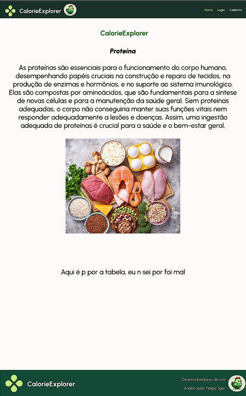
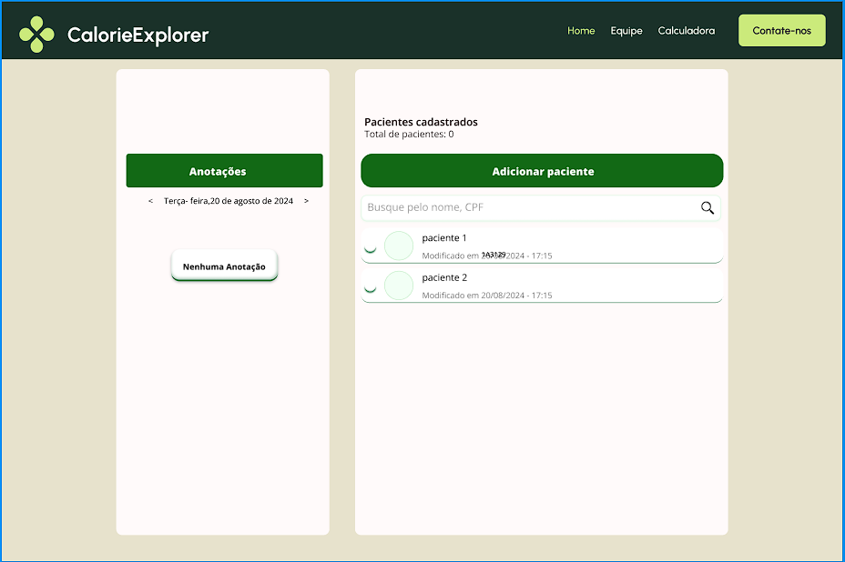
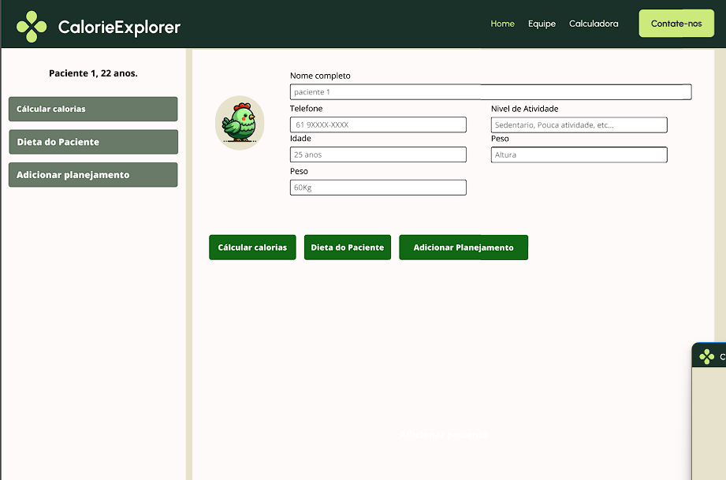
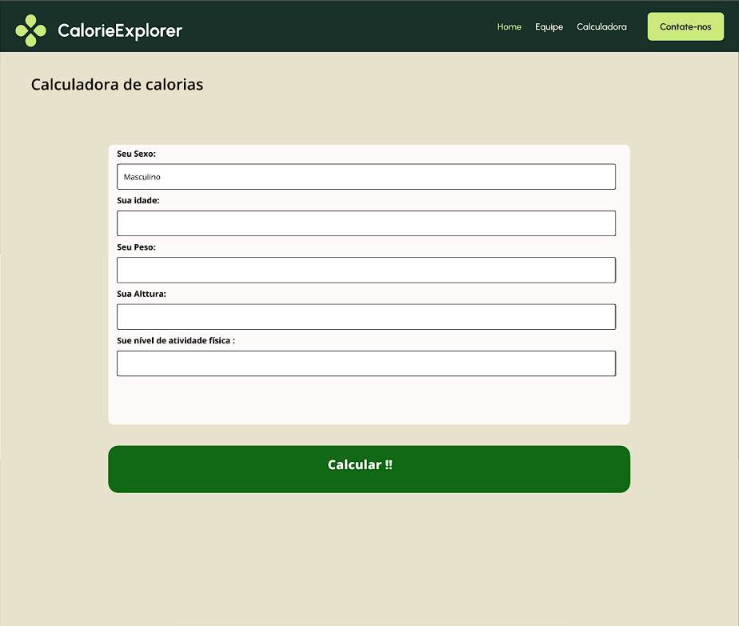
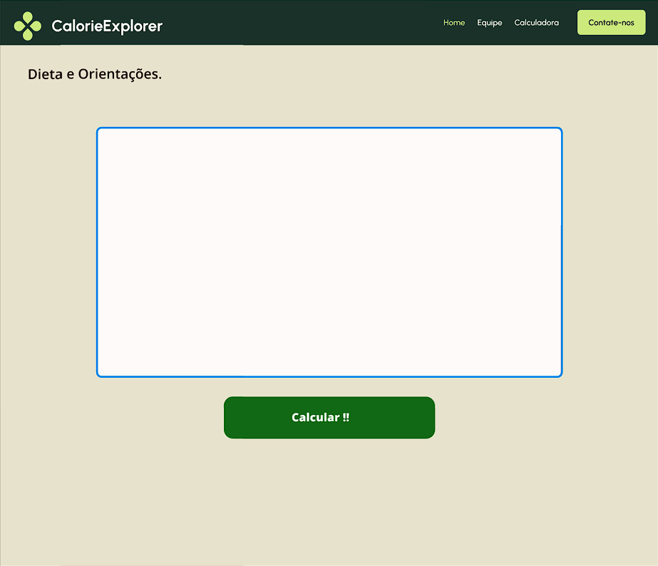
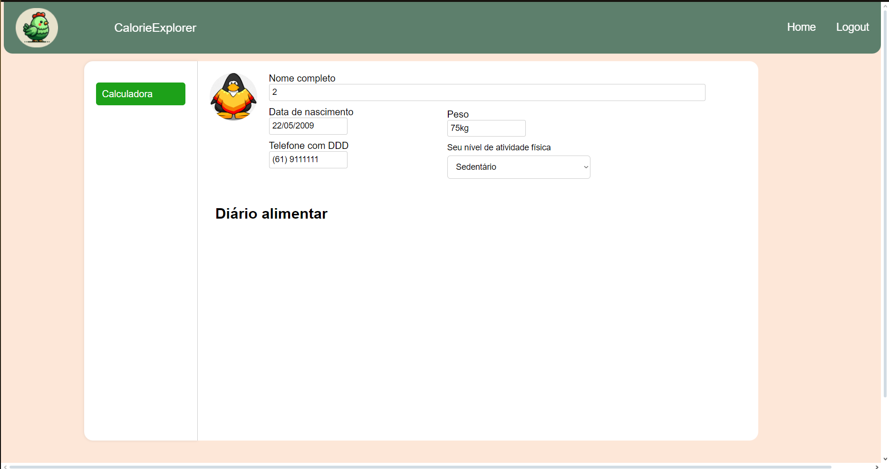
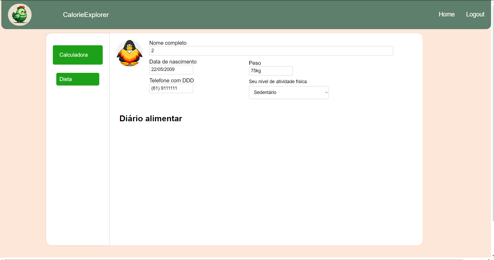

Sprints
Sprint 1
Sprint Planning Objetivo da Sprint 01: Primeira versão da visão de produto e projeto
Tasks:
Documentação - Declaração de Posição do Produto
Documentação - Objetivos do Produto
Documentação - Tecnologias a Serem Utilizadas
Documentação - Organização do Projeto
Documentação - Planejamento das Fases e/ou Iterações do
Projeto
Documentação - Matriz de Comunicação
Documentação - Gerenciamento de Riscos
Documentação - Critérios de Replanejamento
Documentação - Metodologia e Processo de Desenvolvimento de Sofware
Documentação - Atividades
Documentação - Lições aprendidas da Unidade 01
Apresentação do seminário Scrum
Gravar vídeo de apresentação Unidade 01
Sprint 2
Objetivo da Sprint 02: Elicitação de requisitos, estudo de tecnologias e protótipo de interface.
Tasks:
Criação do protótipo de baixa fidelidade
Visão do Produto e Projeto - Objetivos do Produto
Visão do Produto e Projeto – Ajustes da matriz de comunicação
Visão do Produto e Projeto – Descrição da metodologia
Visão do Produto e Projeto – Organizar as atividades dentro do ciclo
Visão do Produto e Projeto – Lições aprendidas
Elicitação de requisitos com o cliente (preparação sprint 03)
Estudo de tecnologias
Sprint 3
Objetivo da Sprint 03: Contrução do Product Backlog inicial, configuração de ambiente, protótipo de alta fidelidade e estudo de tecnologias.
Tasks:
Definição e documentação dos requisitos funcionais do Product Backlog
Definição e documentação dos requisitos não funcionais do produto
Definição e documentação do MVP1 e
Estudo das tecnologias e configuração de ambiente
Protótipo de alta fidelidade     
Sprint 4
Objetivo da Sprint 04: Implementação das US01, US02, US03.
US01:
 US02:
US02:

US03:
Débito Tecnico, a US foi movida para a proxima Sprint.
Sprint 5
US03:
 US04:
US04:
Débito Tecnico, a US foi movida para a proxima Sprint.
US05: 
Sprint 6
US04:
 US06:
US06:
Débito Tecnico, a US tem grande chances de não ser implementada por poblemas relacionados ao banco de dados.
US07:
Débito Tecnico, a US foi movida para a proxima Sprint.
US08:

Sprint 7
US07, US09, US10, US11, US12 e US13.
US07, US09, US12 :

US09:
US10, US11:
Parcialmente completa, a tela e a funcionalidade foi implementada, mas por poblemas relacionados a interação entre front-end, além de outro relacionado ao banco de dados.
 US11: US12 e US13:
A implementação dessa e junção das US03 e US07